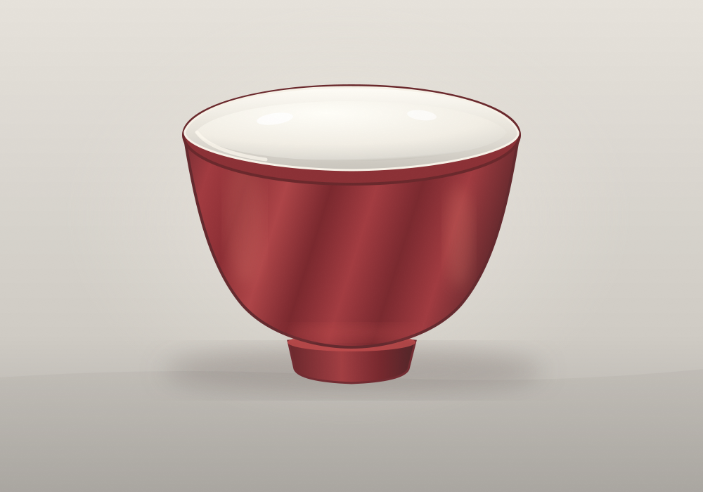

Inside, Still White
A response to the chance image of an early eighteenth-century porcelain bowl: the red glaze stops at a pale lip, and the inside keeps its own light. I stayed with that boundary, leaving the white interior empty.

The chance image is a museum photograph of a Jingdezhen bowl, early eighteenth century. This is a digital drawing, not a reconstruction.
Return to the studio